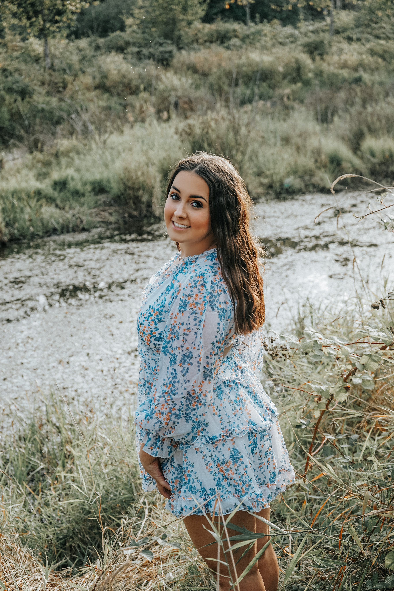
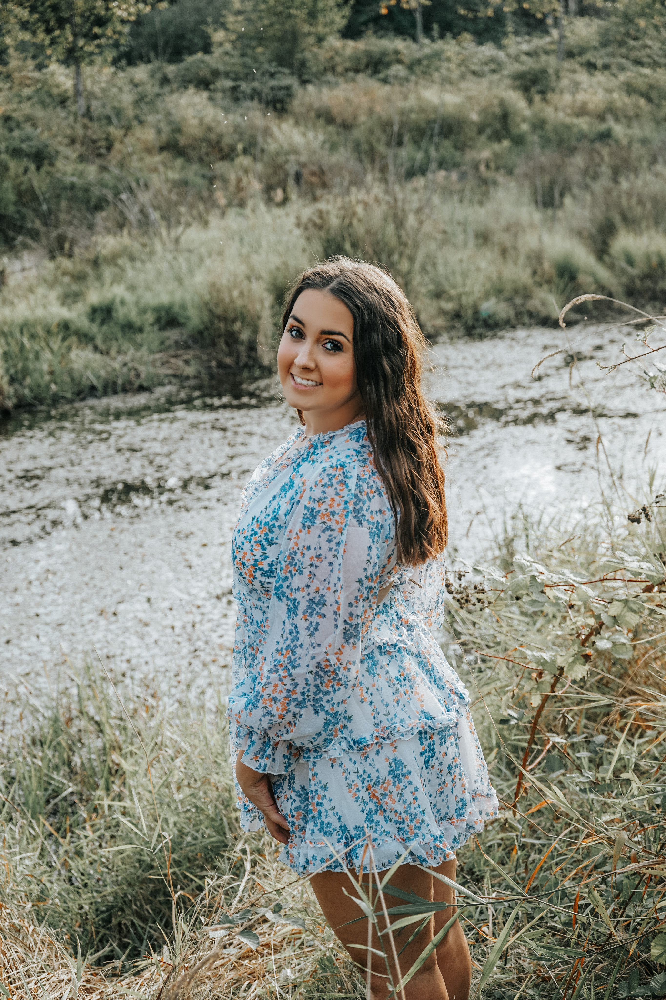
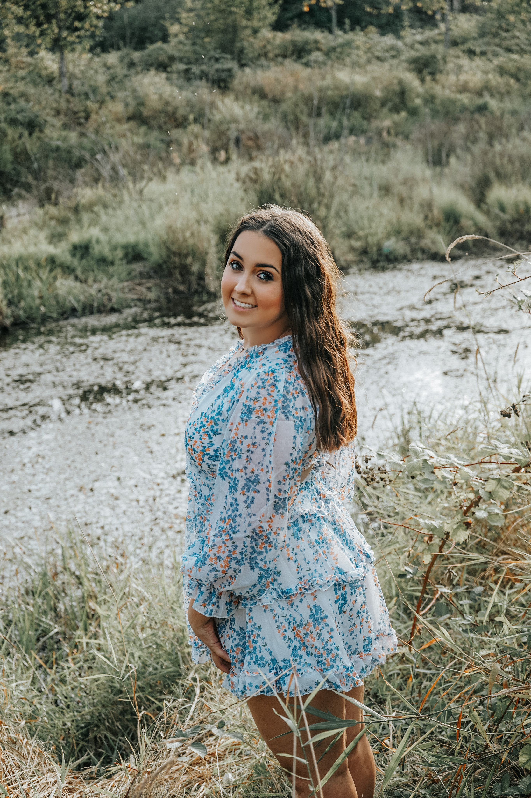
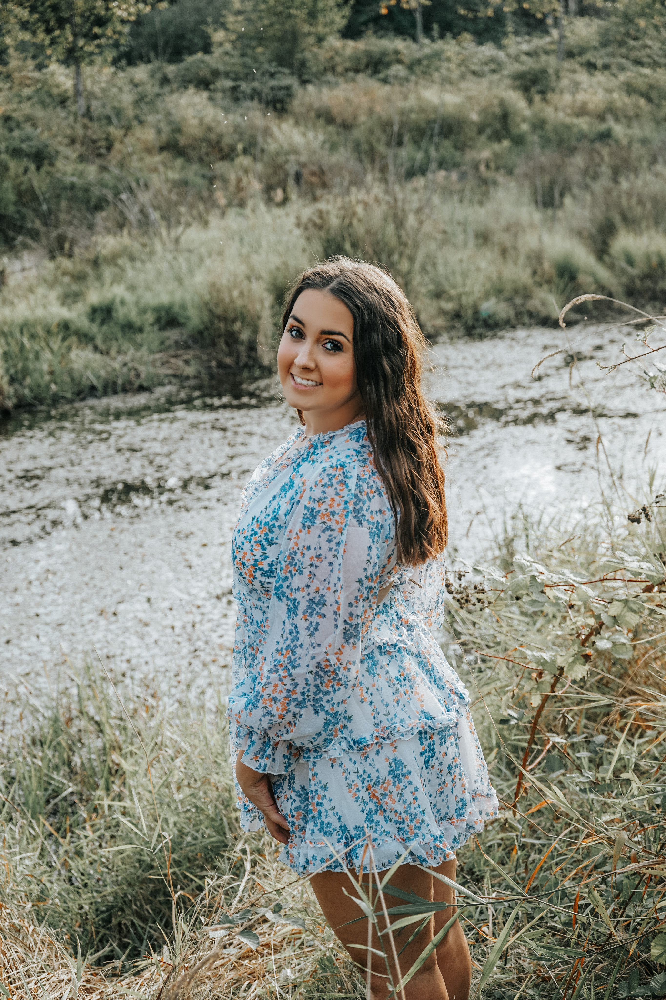

Thank you for stopping by my digital resume. I would love to tell you a little about me first. My name is Sophie, and I am a Junior at The University of Montana in Missoula. I am double majoring in Management Information Systems and Marketing, and on path to complete it in 4 years with an expected graduation of Spring 2026.
I am originally from Western Washington, but moved to Montana just over two years ago. What brought you to Montana you may ask? I am a lover of the outdoors, whether it is hiking, on the river, or hunting animals in the beautiful landscapes of Western Montana!